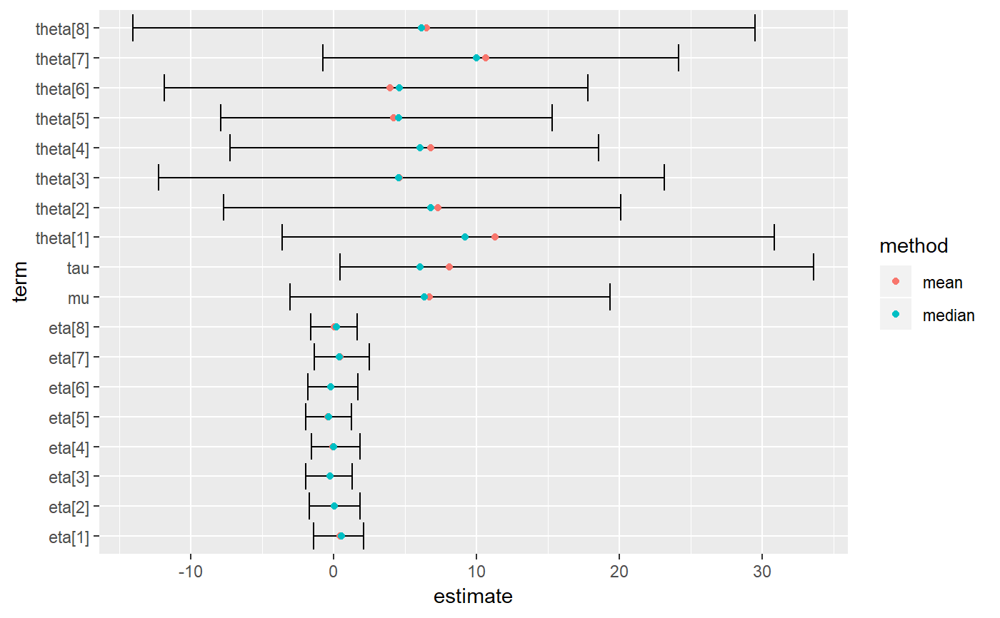

MCMC tidiers will soon be deprecated in broom and there is no ongoing
development of these functions at this time. MCMC tidiers are being
developed in the broom.mixed package, which is not yet on CRAN.
tidyMCMC(x, pars, estimate.method = "mean", conf.int = FALSE, conf.level = 0.95, conf.method = "quantile", droppars = "lp__", rhat = FALSE, ess = FALSE, ...) # S3 method for rjags tidy(x, pars, estimate.method = "mean", conf.int = FALSE, conf.level = 0.95, conf.method = "quantile", ...) # S3 method for stanfit tidy(x, pars, estimate.method = "mean", conf.int = FALSE, conf.level = 0.95, conf.method = "quantile", droppars = "lp__", rhat = FALSE, ess = FALSE, ...)
| x | an object of class ‘"stanfit"’ |
|---|---|
| pars | (character) specification of which parameters to include |
| estimate.method | method for computing point estimate ("mean" or median") |
| conf.int | (logical) include confidence interval? |
| conf.level | probability level for CI |
| conf.method | method for computing confidence intervals ("quantile" or "HPDinterval") |
| droppars | Parameters not to include in the output (such as log-probability information) |
| rhat, ess | (logical) include Rhat and/or effective sample size estimates? |
| ... | unused |
# NOT RUN { # Using example from "RStan Getting Started" # https://github.com/stan-dev/rstan/wiki/RStan-Getting-Started model_file <- system.file("extdata", "8schools.stan", package = "broom") schools_dat <- list(J = 8, y = c(28, 8, -3, 7, -1, 1, 18, 12), sigma = c(15, 10, 16, 11, 9, 11, 10, 18)) if (requireNamespace("rstan", quietly = TRUE)) { set.seed(2015) rstan_example <- stan(file = model_file, data = schools_dat, iter = 100, chains = 2) } # }if (requireNamespace("rstan", quietly = TRUE)) { # the object from the above code was saved as rstan_example.rda infile <- system.file("extdata", "rstan_example.rda", package = "broom") load(infile) tidy(rstan_example) tidy(rstan_example, conf.int = TRUE, pars = "theta") td_mean <- tidy(rstan_example, conf.int = TRUE) td_median <- tidy(rstan_example, conf.int = TRUE, estimate.method = "median") library(dplyr) library(ggplot2) tds <- rbind(mutate(td_mean, method = "mean"), mutate(td_median, method = "median")) ggplot(tds, aes(estimate, term)) + geom_errorbarh(aes(xmin = conf.low, xmax = conf.high)) + geom_point(aes(color = method)) }